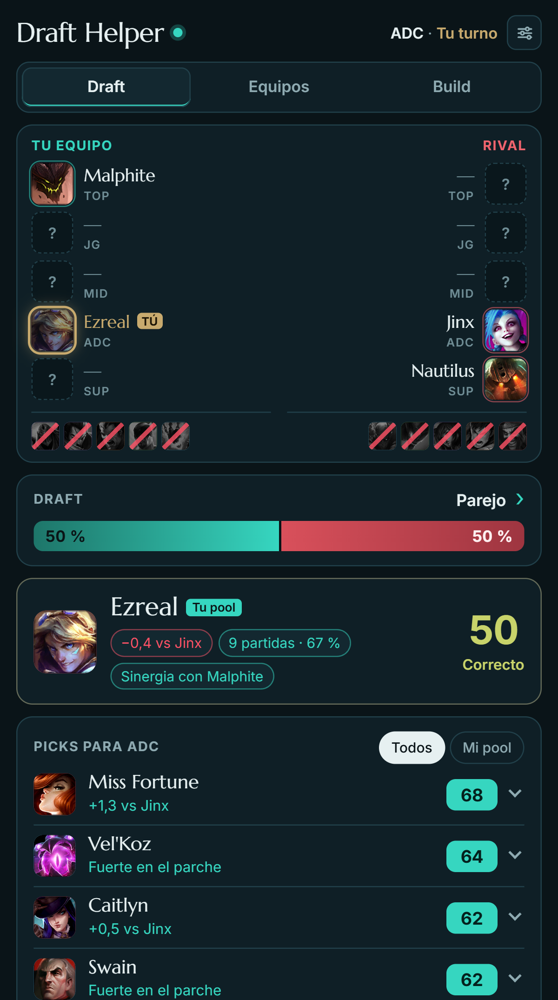

Draft Helper
Draft HelperTu draft, claro de un vistazoYour draft, clear at a glance
Asistente gratuito para la selección de campeones de League of Legends. Recomienda bans y picks para tu rol, compara las dos composiciones y te muestra runas y objetos ajustados al rival, con estadísticas de partidas reales de Esmeralda o más.
A free champion select assistant for League of Legends. It recommends bans and picks for your role, compares both team compositions and shows runes and items adjusted to the enemy team, using statistics from real Emerald+ ranked games.
Gratis · Windows 10 y 11 · Sin cuenta ni clave de RiotFree · Windows 10 and 11 · No account or Riot key needed
Versión de prueba: Windows puede mostrar una advertencia porque la app todavía no tiene firma digital.Test version: Windows may show a warning because the app is not digitally signed yet.

Todo lo que necesitas antes de la partidaEverything you need before the game
Una ventana angosta al lado del cliente, con poco texto: se lee en los segundos que dura tu turno.A narrow window next to the client with very little text: readable in the seconds your turn lasts.
Picks y bans con su razónPicks and bans with a reason
Una nota de 0 a 100 para cada opción, según la fuerza del campeón, la línea, la sinergia, lo que le falta a tu equipo y tu comodidad con él.
A 0–100 score for each option based on champion strength, lane matchup, synergy, what your team is missing and how comfortable you are with it.
Las dos composiciones, comparadasBoth compositions, compared
Quién llega mejor al draft y por qué: tipo de composición, frontline, control, daño, líneas y un plan corto para la partida.
Which team has the better draft and why: composition type, frontline, crowd control, damage profile, lanes and a short game plan.
Runas y objetos ajustados al rivalRunes and items adjusted to the enemy
La página de runas, los hechizos y el orden de objetos más usados. Si el rival tiene mucho daño mágico o físico, la build cambia según lo que compran los jugadores en esas partidas. Y lo que arman los pros en sus torneos.
The most played rune page, summoner spells and item order. If the enemy team deals mostly magic or physical damage, the build adapts to what players buy in those games. Plus what pros build in their tournament games.
Prueba composiciones cuando quierasTest compositions anytime
Arma un draft a mano, sin estar en partida: la nota de cada pick, quién gana el draft y qué le falta a cada equipo. Sirve también para equipos que preparan drafts.
Build a draft by hand, no game needed: every pick's score, which team wins the draft and what each team is missing. Also useful for teams preparing drafts.
SoloQ y pros, por rolSolo queue and pros, by role
Los mejores campeones del parche en cada rol según partidas de Esmeralda o más, y lo que eligen y banean los pros en las ligas principales y el Mundial, con sus duplas favoritas.
The best champions of the patch in each role from Emerald+ games, and what pros pick and ban in the major leagues and Worlds, with their favorite duos.
Tus notas de cada matchupYour notes for every matchup
Anota qué te sirvió y qué no contra cada rival. La próxima vez que se dé ese matchup, la nota aparece sola, y puedes buscarlas y editarlas por rol.
Write down what worked and what didn't against each opponent. Next time that matchup comes up, your note shows up on its own, and you can search and edit them by role.
A tu maneraYour way
Colores, fondo con el arte de tu campeón y su aspecto, tamaño, secciones visibles y una ventana que queda encima del juego si quieres.
Colors, a background with your champion's splash art and skin, size, visible sections, and an optional always-on-top window.
Juego limpioFair play
Draft Helper te muestra opciones; las decisiones son tuyas.Draft Helper shows you options; the decisions are yours.